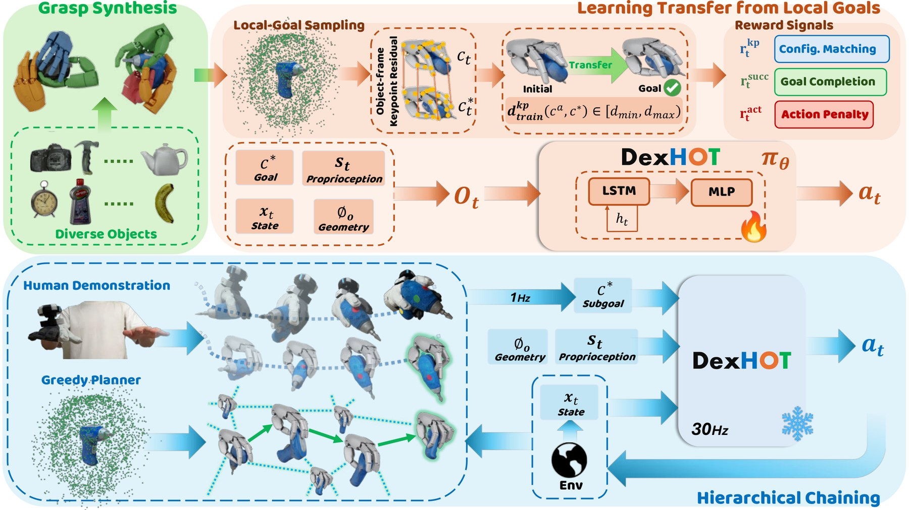
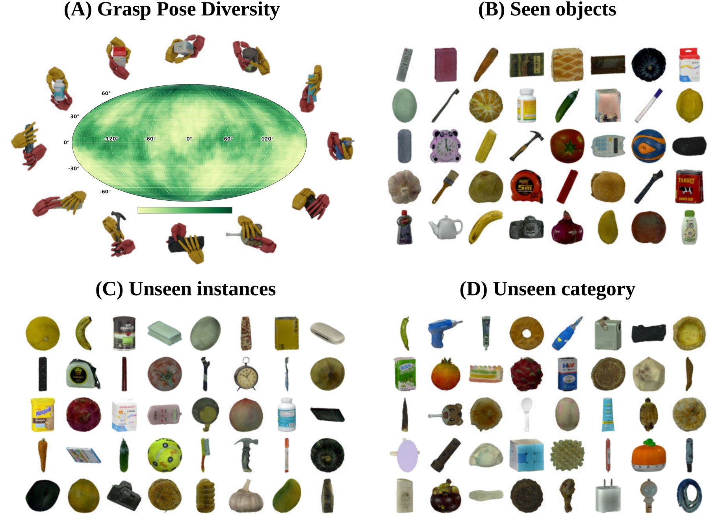

Code forthcoming.
Dexterous manipulation involves not only moving objects, but also arranging the hand around them to maintain useful contacts and enable subsequent actions. Yet many learning-based systems specify goals primarily through object poses or trajectories, leaving hand–object configurations to emerge implicitly. We introduce DexHOT, which formulates dexterous manipulation as hand–object configuration transfer: moving between feasible configurations that jointly specify hand articulation and object pose relative to the wrist. DexHOT learns a reusable relation-conditioned transfer primitive from synthetic feasible configuration pairs and composes long-horizon behaviors through hierarchical chaining of closed-loop configuration subgoals. On DexHOTBench with 120 objects, a single policy achieves 80.5% transfer success on seen objects and 69.4% on unseen objects; on a real dexterous hand, it achieves 61.5% success over 200 real-robot transfers and 90% task success on six demonstration-guided tasks. These results show that explicit hand–object goals provide an expressive and composable interface for dexterous manipulation.

DexHOT learns a relation-conditioned transfer primitive from synthetic pairs of feasible hand–object configurations, and composes long-horizon behaviors by hierarchically chaining closed-loop configuration subgoals rather than replaying actions or training task-specific policies.

DexHOTBench spans 120 objects, split into seen objects, unseen instances of seen categories, and unseen categories, enabling a controlled evaluation of how well a single policy generalizes across hand–object configuration transfers.
@article{gui2026dexhot,
author = {Gui, Zhewei and Bolton, Anthony and Zhang, Jiyao and Chen, Zeyuan
and Yan, Qiyang and Wang, Tianyu and Dong, Hao},
title = {DexHOT: Learning Hand--Object Configuration Transfer for Dexterous Manipulation},
journal = {arXiv preprint},
year = {2026},
}